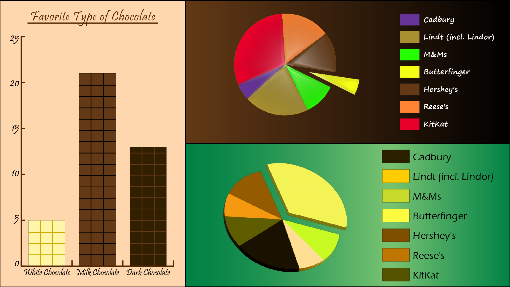

I conducted a survey on the types of chocolate that people enjoy. My survey had two parts to it: the first part measured whether people enjoyed Milk chocolate, Dark chocolate or White chocolate more; The second part measured which branded chocolate was the most and least favorite of the public.
Interestingly enough, Butterfingers was the least favored across the board. More people seemed to like Milk Chocolate which aligned with the brand choices. White chocolate came dead last, but still had some fans showing up to support. Although more people seemed to be fans of KitKats, I found that fewer people disliked Lindt and Lindor chocolate, which is my personal favorite, so I see this as an absolute win!
